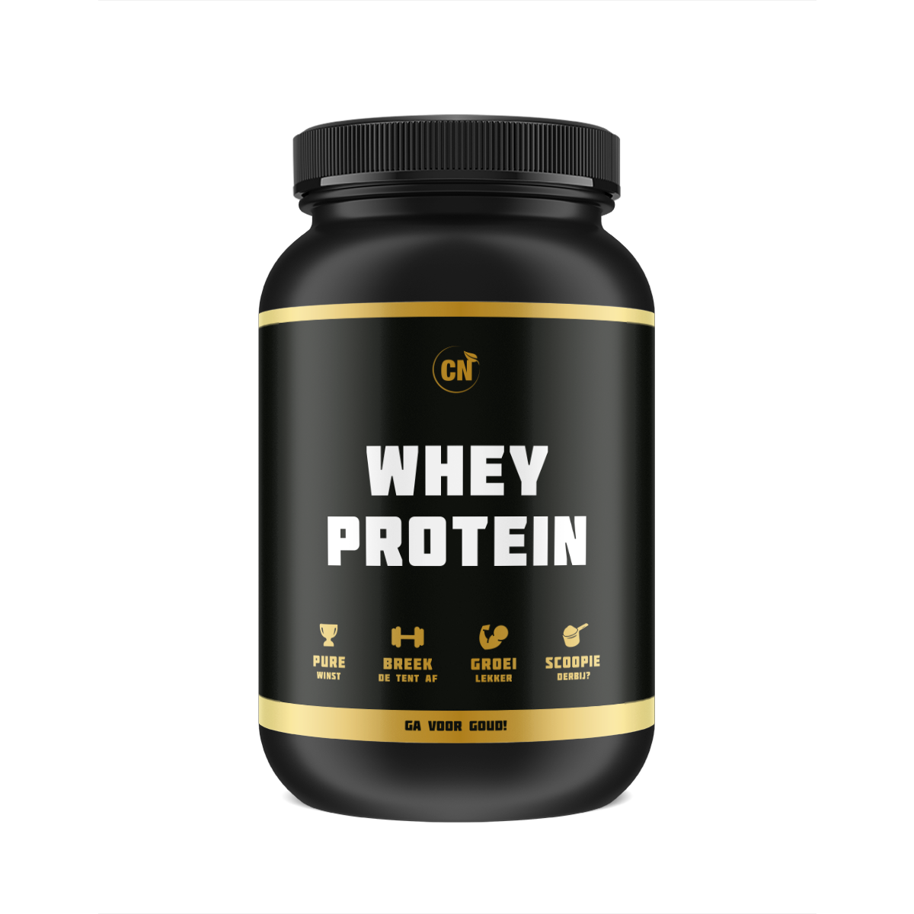

Supplementen
Het gebruik van workout-supplementen lijkt gangbaar geworden. Er bestaan speciale supplementen voor sporters. Vóór het sporten worden ze ingenomen om de prestaties te verbeteren. Na het sporten gebeurt dat om het lichaam beter te laten herstellen van de inspanning.
In Nederland gebruikt ruim een kwart van de sporters voor of na het sporten één of meerdere sportsupplementen. Ze worden het vaakst gebruikt bij fitness en krachtsport, maar ook bij wielrennen en hardlopen. Meer mannen dan vrouwen gebruiken workout-supplementen. Mannen gebruiken meer verschillende producten en ook vaker per week. Sporters van 25 t/m 34 jaar gebruiken ze het meest. Dit blijkt uit onderzoek van het RIVM onder ruim 7000 amateursporters. Het gaat om mensen die minimaal één keer in de week sporten.
Sporters nemen vooral supplementen in met eiwit (proteïne), cafeïne, calcium, magnesium, vitamines en creatine. Ongeveer één op de zes mensen weet niet welke ingrediënten in hun sportsupplement zitten. Dit geldt vooral voor vrouwen en jongeren (15 t/m 24 jaar). Ongeveer tien procent van de producten die de ondervraagde sporters gebruiken, bevatte stoffen die schadelijk zouden kunnen zijn. Dat geldt vooral voor producten met veel verschillende ingrediënten. Er kunnen bijvoorbeeld stoffen in te hoge doseringen in zitten. Ook kan er doping (zoals DMAA) in zitten of verboden ingrediënten, zoals yohimbine.
Meer dan de helft van de gebruikers zegt dat de sportsupplementen werken. Bijna de helft ervaart wel eens bijwerkingen, zoals hoofdpijn, slapeloosheid, hartkloppingen en maagklachten. Voor een deel van de gebruikers waren bijwerkingen een reden om ermee te stoppen.
Veel sporters die sportsupplementen gebruiken, drinken regelmatig koffie, energiedrank en/of alcohol. Soms doen ze dat tegelijk, wat schadelijk kan zijn voor de gezondheid. Ze kunnen daardoor bijvoorbeeld te veel cafeïne binnenkrijgen. De meeste mensen vragen zich niet af of combinaties van middelen schadelijk kan zijn voor hun gezondheid.